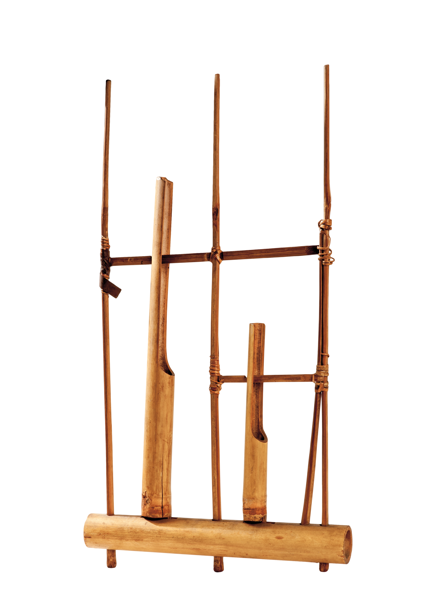

Angklungs are Southeast Asian idiophones formed from bamboo. Each angklung consists of at least two bamboo tubes, but in half to varying lengths mounted on a bamboo frame. One end is secure while the other is unfixed-when shaken, the tubes strike one another and produce sound.
Each angklung has a unique pitch, requiring additional angklungs, and often people, to create a complete melody. In group performances, each individual is responsible for their particular tone.
Tap here to see a video of angklungs in action 